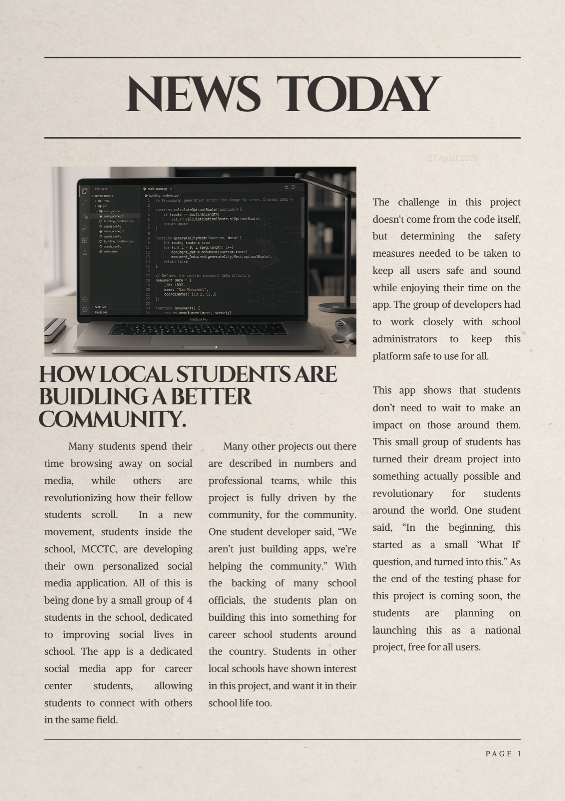

Newspaper
A front-page article about students building a better school community through software.
Reflection
I chose this idea for a newspaper because it represents our school, and is a similar idea to that I used in the BPA State competitions. I made it to nationals using a similar app idea, so this came to mind. I wanted to emphasize community in this article, as I believe it is one of the most important aspects when developing an app. When developing my app for the BPA competition, I focused on a similar theme: school connectivity. In this article, I also wanted to convey that building apps and programs is less about just code and numbers, but more about the people you can affect with your ideas. In my work, I can make people’s lives easier or better, and I wanted to show that in this newspaper. I have learned that many people’s lives can be changed with enough work, and developing an app is one route to do that.
I chose this idea for a newspaper because it represents our school, and is a similar idea to that I used in the BPA State competitions. I made it to nationals using a similar app idea, so this came to mind. I wanted to emphasize community in this article, as I believe it is one of the most important aspects when developing an app. When developing my app for the BPA competition, I focused on a similar theme: school connectivity. In this article, I also wanted to convey that building apps and programs is less about just code and numbers, but more about the people you can affect with your ideas. In my work, I can make people’s lives easier or better, and I wanted to show that in this newspaper. I have learned that many people’s lives can be changed with enough work, and developing an app is one route to do that.
